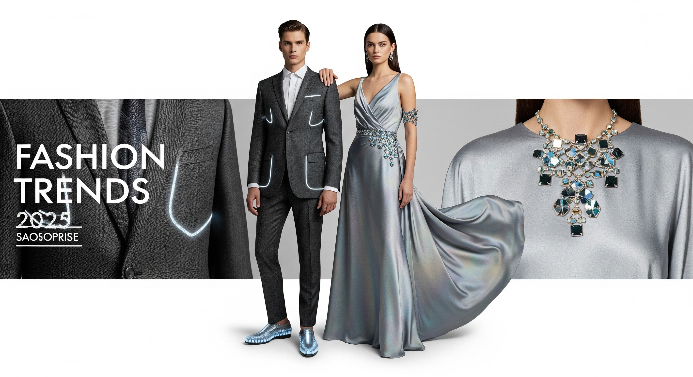
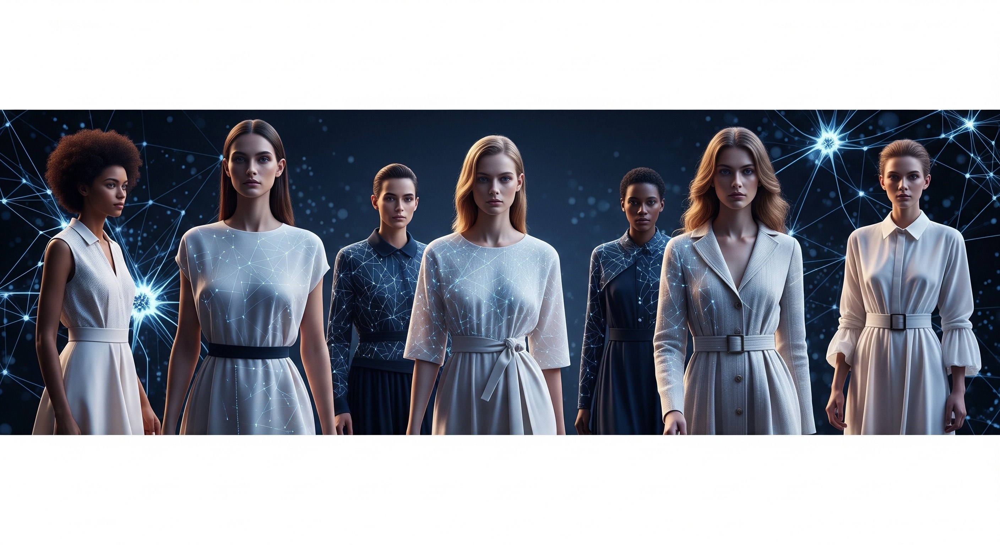

Las Tendencias de Moda Imperdibles de 2025
Publicado el 10 de Julio de 2025 por Estilo NexGen
El 2025 ha llegado cargado de energía y nuevas propuestas que prometen revolucionar nuestro guardarropa. Desde la pasarela hasta el street style, la moda se reinventa con un toque de nostalgia y una mirada audaz hacia el futuro.
¿Listxs para descubrir lo que nos depara este año? ¡Aquí te traemos las tendencias más hot que no querrás perderte!
- El Reinado del Confort Sofisticado: Lujo Discreto al Máximo Nivel
Adiós a la incomodidad sin sacrificar el estilo. El "lujo silencioso" evoluciona en 2025, enfocándose en prendas de alta calidad, cortes impecables y tejidos que se sienten como una segunda piel. Piensa en linos fluidos, sedas suaves
y lanas ligeras en tonos neutros como el beige, el gris perla, el blanco roto y el azul marino. La clave está en la versatilidad y la durabilidad, invirtiendo en piezas atemporales que elevan cualquier look.
- Explosión de Color: Tonos Vibrantes y Paletas Inesperadas
i bien los neutros siguen siendo fundamentales, el 2025 nos invita a atrevernos con el color. Veremos una explosión de tonos saturados como el verde esmeralda, el azul cobalto, el naranja quemado y el fucsia audaz.
La tendencia es usarlos en bloques de color o combinarlos de maneras inesperadas para crear looks impactantes y llenos de personalidad. ¿Listx para un dopamina dress?
- La Vuelta de los Siluetas Dramáticas: Volúmenes y Proporciones Exageradas
El drama se apodera de las siluetas. Las hombreras marcadas, las mangas abullonadas y los pantalones wide-leg con caídas impresionantes regresan con fuerza. Faldas con volumen y vestidos con capas añaden un toque teatral y elegante a cualquier outfit.
La idea es jugar con las proporciones para crear looks que no pasen desapercibidos.
- Texturas que Hablan: Tacto y Sensación en Primer Plano
Prepárense para sentir la moda. Las texturas cobran un protagonismo especial en 2025. Desde el cuero vegano en todas sus versiones (mate, brillante, texturizado) hasta el crochet y los tejidos bouclé, la diversidad es la clave.
Los flecos largos, las plumas y los apliques metálicos también añaden un elemento táctil y visual fascinante a las prendas.
- El Resurgir de los 90 y Y2K con un Twist Moderno
La nostalgia sigue siendo una fuente de inspiración, pero con una actualización refrescante. Elementos de los años 90 y principios de los 2000 se reinterpretan con un toque contemporáneo.
Piensa en tops ajustados, pantalones de tiro bajo (¡sí, han vuelto, pero con moderación!), prendas cargo elegantes y accesorios chunky, todo combinado con una estética pulida y actual.
- Accesorios Statement: El Toque Final que Marca la Diferencia
Los accesorios dejan de ser un complemento para convertirse en el centro de atención. Bolsos estructurados de gran tamaño, joyas escultóricas, gafas de sol futuristas y zapatos que roban miradas
son esenciales para elevar cualquier look. Los cinturones anchos y los pañuelos en el cabello también regresan con fuerza.
- Moda Consciente: Sostenibilidad y Ética en el Corazón de la Industria
Más que una tendencia, la sostenibilidad es una filosofía que se consolida en 2025. Las marcas apuestan cada vez más por materiales reciclados y orgánicos, procesos de producción éticos y
un enfoque en la durabilidad de las prendas. Consumir de manera consciente y apoyar marcas con valores es más importante que nunca.
Y tú, ¿cuál de estas tendencias estás más emocionada de probar? ¡Déjanos tus comentarios y comparte tus looks favoritos con nosotros!
Volver al Blog

El Futuro ya Está Aquí: Cómo la Inteligencia Artificial Está Transformando el Mundo de la Moda
Publicado el 5 de Julio de 2025 por Estilo NexGen
La moda, un sector tradicionalmente impulsado por la creatividad humana y las tendencias cambiantes, está viviendo una revolución silenciosa gracias a la inteligencia artificial (IA).
Lo que antes parecía ciencia ficción, hoy es una realidad que está impactando desde el diseño de prendas hasta la experiencia de compra. ¿Preparadxs para descubrir cómo la IA está rediseñando nuestro armario y la industria en general?
Diseñando con Algoritmos: La IA como Musa Creativa
La pregunta de si una máquina puede ser creativa ya tiene un rotundo sí como respuesta. La inteligencia artificial está siendo utilizada para analizar vastas cantidades de datos sobre tendencias pasadas y presentes, patrones de color,
texturas e incluso el comportamiento del consumidor. Con esta información, los algoritmos pueden generar ideas de diseño innovadoras, sugiriendo siluetas, combinaciones de colores y estampados que quizás un diseñador humano no habría considerado.
Esto no significa el fin de la creatividad humana, sino una poderosa herramienta que la complementa y expande sus límites, abriendo puertas a posibilidades estéticas inimaginables.
Tu Asesor de Moda Personal: La Personalización Extrema
Imagina tener un asesor de moda personal disponible las 24 horas del día, los 7 días de la semana. La IA está haciendo esto posible. A través del análisis de datos sobre tus preferencias de estilo, tallas, colores favoritos e incluso el clima de tu ubicación,
los algoritmos pueden ofrecerte recomendaciones de prendas personalizadas, crear looks a medida e incluso alertarte sobre promociones de artículos que te encanten. Esto se traduce en una experiencia de compra más eficiente, personalizada y, sobre todo, mucho
más satisfactoria para el consumidor moderno.
Adiós a los Probadores Físicos: La Revolución del Probador Virtual
¿Cansadx de las largas filas en los probadores o de la incertidumbre al comprar online? La IA y la realidad aumentada (RA) están revolucionando la forma en que nos probamos la ropa. A través de aplicaciones y espejos inteligentes, puedes visualizar cómo te
quedaría una prenda sin necesidad de vestirte físicamente. Estas tecnologías utilizan modelos 3D y el seguimiento de tu cuerpo para ofrecer una representación virtual precisa, ahorrándote tiempo y haciendo la experiencia de compra en línea mucho más confiable y libre de dudas.
Eficiencia y Sostenibilidad: La IA Optimizando la Cadena de Suministro
La sobreproducción y el desperdicio son desafíos importantes en la industria de la moda. Afortunadamente, la IA está ayudando a las marcas a optimizar la gestión de su inventario, prediciendo la demanda con mayor precisión y evitando la producción excesiva de
artículos que podrían no venderse. Esto no solo beneficia a las empresas al reducir costos y aumentar la eficiencia, sino que también contribuye a una moda más sostenible y responsable con el medio ambiente, un pilar fundamental en la moda del futuro.
En la Vanguardia de las Tendencias: Detección en Tiempo Real
La moda es un campo que se mueve a la velocidad de la luz, y la IA es el copiloto perfecto para mantenerse al día. Puede analizar grandes volúmenes de datos de redes sociales, blogs de moda y plataformas de comercio electrónico para identificar tendencias emergentes en tiempo real.
Esto permite a las marcas reaccionar rápidamente a los cambios en los gustos de los consumidores y adaptar sus colecciones de manera más ágil, asegurándose de que lo que llegue a las tiendas sea precisamente lo que la gente quiere usar.
Protegiendo la Autenticidad: La IA contra la Falsificación
La falsificación es un problema endémico en la industria de la moda de lujo, socavando el valor de las marcas y la confianza del consumidor. La IA está siendo utilizada para desarrollar sistemas de autenticación más sofisticados, capaces de verificar la originalidad
de los productos a través del análisis de materiales, patrones de costura y otros detalles que serían difíciles de replicar por falsificadores. Esto protege tanto a las marcas como a los consumidores, asegurando la autenticidad en cada compra.
El Futuro Híbrido de la Moda: Colaboración, no Sustitución
Es importante destacar que la IA no busca reemplazar a los diseñadores ni a los profesionales de la moda. Más bien, se presenta como una herramienta poderosa que puede potenciar su creatividad, optimizar procesos y mejorar drásticamente la experiencia del consumidor.
El futuro de la moda será, sin duda, una colaboración fascinante entre la inteligencia humana y la artificial, dando como resultado una industria más innovadora, eficiente y adaptada a las necesidades individuales.
¿Qué te parece el papel de la IA en la moda? ¿Te emociona o te preocupa cómo está cambiando la industria?
Volver al Blog